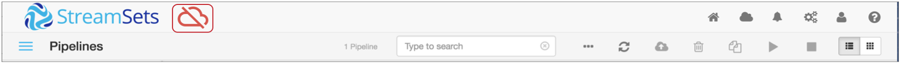

Register Data Collector with Control Hub
You must register a Data Collector to work with StreamSets Control Hub. When you register a Data Collector, Data Collector generates an authentication token that it uses to issue authenticated requests to Control Hub.
You can register a Data Collector from the Data Collector UI, from the command line interface, or from Control Hub. For instructions on registering from Control Hub, see the Control Hub online help.
For a Cloudera Manager installation, you must register a Data Collector from Cloudera Manager.
A registered Data Collector communicates with Control Hub at regular intervals. If a Data Collector cannot connect to Control Hub, due to a network or system outage, then the Data Collector uses the Control Hub disconnected mode.
You can optionally configure each registered Data Collector to use an authenticated HTTP proxy server to access Control Hub.
Before you register a Data Collector, perform the necessary prerequisites. The prerequisites include creating new Control Hub users and groups. After registration, be sure to transfer permissions to the new Control Hub users and groups.
Registration Prerequisites
Before you register Data Collectors, complete the following prerequisites:
- Verify that the statistics stage library is installed.
- Control Hub requires that the statistics stage library be installed on each registered Data Collector. Control Hub requires the library to run system pipelines on the Data Collector. By default, both the core and full Data Collector installations include the statistics stage library.
- To verify that a Data
Collector has the statistics stage library installed, click the Package Manager icon
(
 ) to display the list of installed stage libraries.
If the statistics library was uninstalled, install
the library before registering the Data
Collector.
) to display the list of installed stage libraries.
If the statistics library was uninstalled, install
the library before registering the Data
Collector. - Create a Control Hub user account and group for each Data Collector user and group.
- If your organization currently uses Data Collector, you must create a Control Hub user account and group for each Data Collector user account and group, assigning the corresponding Data Collector roles to each. After a Data Collector is registered with Control Hub, the Data Collector uses Control Hub user authentication. Only Control Hub user accounts can log in to registered Data Collectors.
-
If your organization is not using Data Collector, you can skip this prerequisite. You can create new Control Hub user accounts and groups at any time.
- Registered Data Collectors belong to the organization of the user who completes the registration. All user accounts that belong to the same organization and that have the appropriate roles can log in to the registered Data Collectors.
- For instructions on creating corresponding Control Hub user accounts, see the first tutorial in the Control Hub online help.Tip: If Data Collector uses file-based authentication and if you register the Data Collector from the Data Collector UI, you can skip this step and create Control Hub user accounts during the registration process, as described in Registering from Data Collector.
Registering from Data Collector
You can register a Data Collector with Control Hub from the Data Collector UI.
-
Restart the Data
Collector in one of the following ways:
- If you started the Data Collector manually from the command line, click Restart Data Collector in the Enable SCH window.
- If you started the Data
Collector as a service, you must use the command line for restart. Click
Cancel in the Enable SCH
window, and then run the following command:
service sdc restart
When you log in to the registered Data Collector using a Control Hub user account, the following Control Hub Enabled icon displays: To enable Control Hub users to work with pipelines, transfer permissions to the Control Hub users and groups. For more information, see Transfer Permissions to Control Hub Users.
To enable Control Hub users to work with pipelines, transfer permissions to the Control Hub users and groups. For more information, see Transfer Permissions to Control Hub Users.
Registering from the Command Line Interface
You can register a Data Collector with Control Hub from the Data Collector command line interface. The Data Collector must be running before you can use the command line interface.
Start Data Collector, and then use the system enableDPM command to register the Data Collector.
$SDC_DIST/bin/streamsets cli \ (-U <sdcURL> | --url <sdcURL>) \ [(-D <dpmURL> | --dpmURL <dpmURL>)] \ [(-a <sdcAuthType> | --auth-type <sdcAuthType>)] \ [(-u <sdcUser> | --user <sdcUser>)] \ [(-p <sdcPassword> | --password <sdcPassword>)] \ system enableDPM \ (--dpmUrl <dpmBaseURL>) \ (--dpmUser <dpmUserID>) \ (--dpmPassword <dpmUserPassword>) \ [(--labels <labels>)]
When using the system enableDPM command, the following basic options are required:
| Basic Option | Description |
|---|---|
| -U <sdcURL> or --url <sdcURL> |
Required. URL of the Data
Collector. The default URL is http://localhost:18630. |
| -D <dpmURL> or --dpmURL <dpmURL> |
Required. Enter the appropriate URL:
|
The following table describes the enableDPM options:
| Enable DPM Option | Description |
|---|---|
| --dpmUrl <dpmBaseURL> | Required. Enter the appropriate URL:
|
| --dpmUser <dpmUserID> | Required. Enter your Control Hub user ID using the following format:<ID>@<organization ID> |
| --dpmPassword <dpmUserPassword> | Required. Enter the password for your Control Hub user account. |
| --labels <labels> | Optional. Assign a label to this Data
Collector. You can enter multiple labels separated by commas. Labels that
you assign here are defined in the Control Hub configuration file, $SDC_CONF/dpm.properties. To
remove these labels after you register the Data
Collector, you must modify the configuration file. Use labels to group Data Collectors registered with Control Hub. If you know how you want to group your Data Collectors, you can assign labels now. Or you can assign labels in Control Hub after you register the Data Collector. Default is "all", which you can use to run a job on all registered Data Collectors. |
$SDC_DIST/bin/streamsets cli -U http://localhost:18630 -D https://cloud.streamsets.com system enableDPM --dpmUrl https://cloud.streamsets.com --dpmUser alison@MyOrg --dpmPassword MyPassword --labels Finance,Accounting,Development
Restart the Data Collector to apply the changes.
When you log in to the registered Data Collector using a Control Hub user account, the following Control Hub Enabled icon displays:
To enable Control Hub users to work with pipelines, transfer permissions to the Control Hub users and groups. For more information, see Transfer Permissions to Control Hub Users.
Registering from Cloudera Manager
If you installed Data Collector through Cloudera Manager, you must use Cloudera Manager to register the Data Collector with Control Hub.
-
Click to restart the Data
Collector.
When you log in to the registered Data Collector using a Control Hub user account, the following Control Hub Enabled icon displays:
To enable Control Hub users to work with pipelines, transfer permissions to the Control Hub users and groups. For more information, see Transfer Permissions to Control Hub Users.
Disconnected Mode
After a Data Collector is registered with Control Hub, the Data Collector communicates with Control Hub at regular intervals - around every 30 seconds or less. If a Data Collector cannot connect to Control Hub, due to a network or system outage, then the Data Collector uses the Control Hub disconnected mode.
In disconnected mode, you can still log into and use Data Collector. However, you cannot publish pipelines to Control Hub, view pipeline commit history, or download published pipelines from Control Hub. When the Data Collector can connect to Control Hub again, it switches back to the Control Hub enabled mode - and then you can continue to manage how pipelines work with Control Hub.
If a Data Collector switches to disconnected mode while you are logged in, Data Collector requires that you log in again with your Control Hub user account. After you log in, the following Disconnected Mode icon displays:

Using an HTTP or HTTPS Proxy Server
You can configure each registered Data Collector to use an authenticated HTTP or HTTPS proxy server for outbound requests made to Control Hub. Define the proxy properties in the SDC_JAVA_OPTS environment variable in the Data Collector environment configuration file located in the $SDC_DIST/libexec directory.
Modify the environment configuration file used by your installation type.
Add the following Java options to the SDC_JAVA_OPTS environment variable:
- https.proxyUser
- https.proxyPassword
- https.proxyHost
- https.proxyPort
If the proxy server uses HTTP instead of HTTPS, use http.<property name> for each property.
For example, to configure a Data Collector to use an HTTPS proxy server on host 138.0.0.1 and port 3138, define SDC_JAVA_OPTS as follows:
export SDC_JAVA_OPTS="-Xmx1024m -Xms1024m -Dhttps.proxyUser=MyName -Dhttps.proxyPassword=MyPsswrd -Dhttps.proxyHost=138.0.0.1 -Dhttps.proxyPort=3138 -server ${SDC_JAVA_OPTS}"
-Djdk.http.auth.tunneling.disabledSchemes=''
However, use this workaround with caution since it exposes credentials by sending them through an unencrypted proxy.
Using a Publicly Accessible URL
If you register a Data Collector that is installed on a cloud-computing platform such as Amazon Elastic Compute Cloud (EC2), configure the Data Collector to use a publicly accessible URL.
When you register a Data Collector with Control Hub, the Data Collector sends its URL to Control Hub in the format http://<hostname>:<http.port>, where <hostname> is the value defined in the http.bindHost property in the Data Collector configuration file, $SDC_CONF/sdc.properties. If the host name is not defined in http.bindHost, Data Collector runs the following command to determine the host name: hostname -f
For most cloud-computing platforms, the hostname -f command returns the private IP address of the machine on the cloud platform. Control Hub includes the private IP address in theData Collector URL displayed in Control Hub. However, when you click the Data Collector URL, you cannot access the Data Collector because you must use a public IP address to access a cloud machine.
To access a Data Collector installed on a cloud-computing platform from Control Hub, uncomment the sdc.base.http.url property in the Data Collector configuration file, $SDC_CONF/sdc.properties, and then configure it to use the publicly accessible URL to that Data Collector.
After modifying the configuration file, restart Data Collector for the changes to take effect.
Transfer Permissions to Control Hub Users
After you register Data Collector with Control Hub, transfer permissions from the obsolete Data Collector users and groups to the new Control Hub users and groups.
When pipeline access controls are enabled in Data Collector, pipeline permissions determine the access that each user has to a pipeline. Any user without the Admin role requires read permission to view a pipeline. So by default, only Control Hub users with the Organization Administrator or Data Collector Administrator roles can access pipelines immediately after registering Data Collector.
To enable other users to access pipelines, transfer pipeline permissions to Control Hub users and groups. When you transfer permissions, all permissions associated with a user or group transfers to the specified user or group. If you need to customize pipeline permissions, you can edit each pipeline individually.
For information about transferring pipeline permissions, see Transfer Pipeline Permissions. For information about configuring permissions for individual pipelines, see Sharing Pipelines.